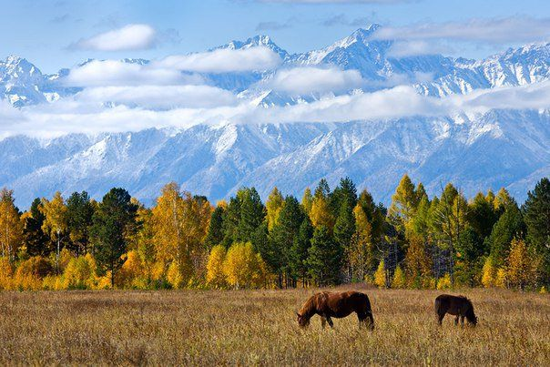
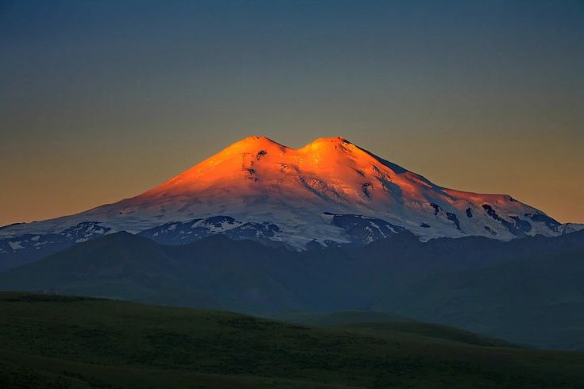
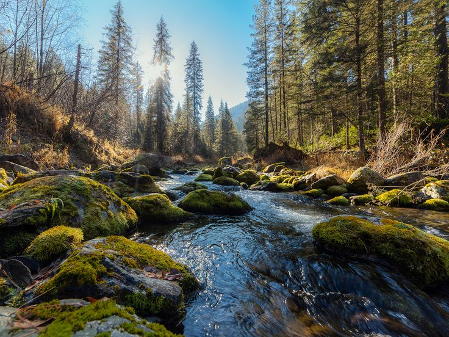
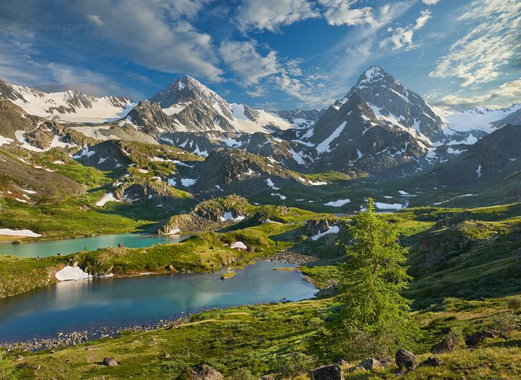
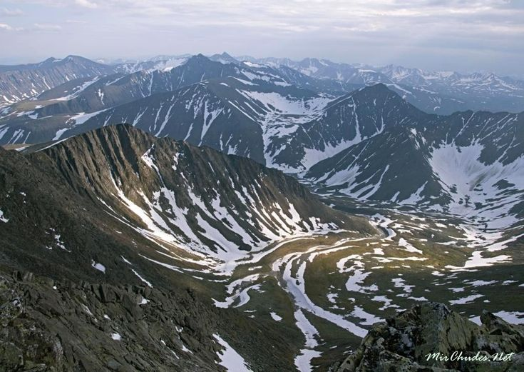
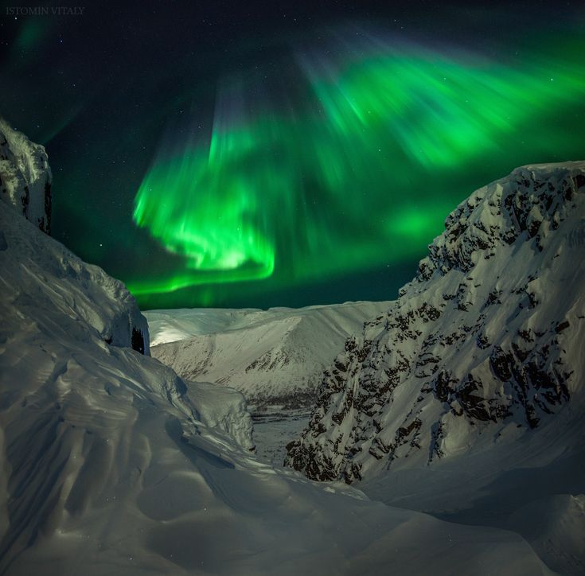
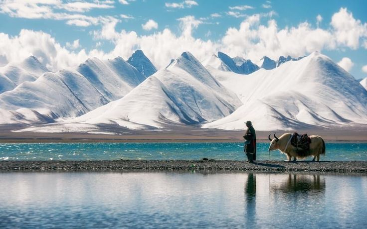

01 / 07Юг Сибири
Саяны
Горная страна с таёжными склонами и высокими вершинами.
- Саянская горная система включает Западный и Восточный Саян.
- Мунку-Сардык — вершина Восточного Саяна высотой 3491 м.
Небольшое путешествие по горам
От заполярных Хибин до высокогорного Тибета — у каждого места свой характер. Выберите карточку, посмотрите фотографию и откройте короткие факты.
Горная коллекция
Нажмите «Подробнее» на карточке, чтобы узнать ещё два факта.

01 / 07Юг Сибири
Горная страна с таёжными склонами и высокими вершинами.

02 / 07Между Чёрным и Каспийским морями
Снежные вершины и глубокие ущелья одного из самых известных горных регионов.

03 / 07Южный берег Байкала
Хребет, где горные склоны соседствуют с байкальскими пейзажами.

04 / 07Центральная Азия
Горные долины, ледники и озёра на стыке нескольких стран.

05 / 07Граница Европы и Азии
Длинная цепь гор, протянувшаяся через разные природные зоны.

06 / 07Кольский полуостров
Северные горы с широкими платообразными вершинами и суровыми зимними пейзажами.

07 / 07Высокогорье Азии
Огромный высокогорный край с заснеженными вершинами и прозрачными озёрами.